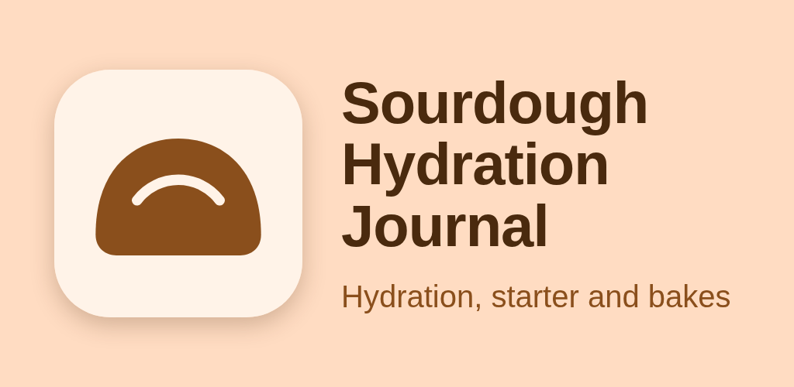
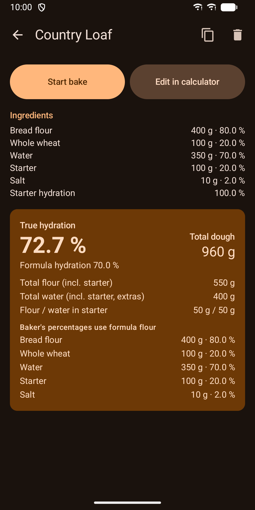
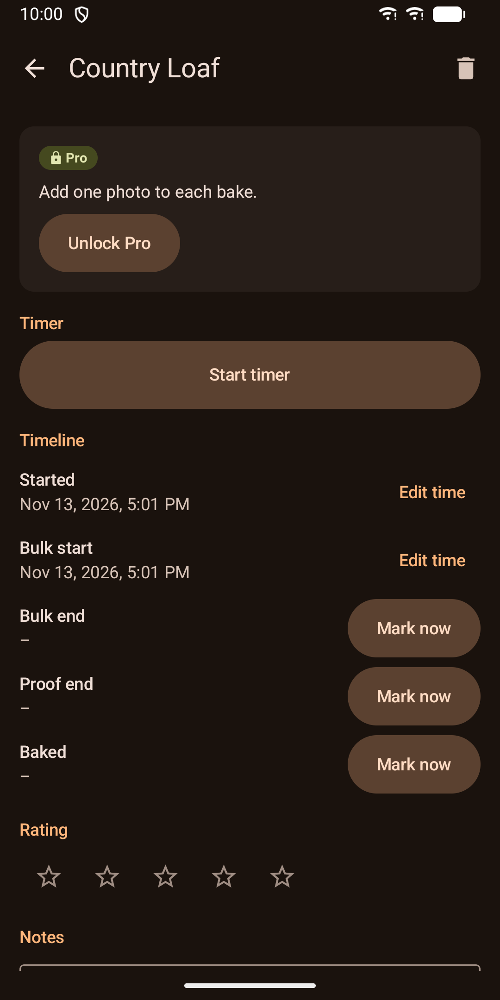
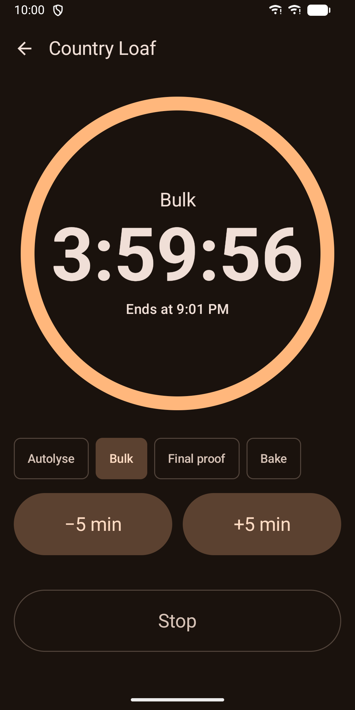

Diario de Masa Madre
Porcentajes del panadero, registro de masa madre y diario de horneado.







Acerca de la app
Diario de Masa Madre es una herramienta de cocina para panaderos caseros. Incluye una calculadora de porcentajes del panadero, un registro de alimentación de la masa madre y un diario para cada hornada. Hidratación real Muchas calculadoras olvidan la harina y el agua que hay dentro de la masa madre. Esta las cuenta. Introduce tus harinas, el agua, la masa madre, la sal y los extras. El desglose muestra masa total, harina total, agua total, hidratación real e hidratación de fórmula una junto a la otra, además de los porcentajes del panadero de cada ingrediente. Si marcas un extra, como la leche, como "cuenta como agua", los números se ajustan. Escalado Escala una receta a un peso objetivo de masa o de harina. Puedes cambiar entre gramos y onzas cuando quieras. Registro de alimentación Registra una alimentación con un toque. La app recuerda tu proporción habitual y el peso de la masa madre. Puedes elegir 1:1:1, 1:2:2 o 1:5:5, o definir tu propia proporción. Añade una nota y la hora a la que tu masa madre llegó a su punto máximo. Recordatorios Recibe una notificación cuando toque alimentar, con el intervalo que elijas para cada masa madre. Diario de horneado Empieza una hornada a partir de una receta. La app guarda una copia de la receta tal como se hizo, así que los cambios posteriores no alteran tu historial. Anota los tiempos de fermentación en bloque, de fermentación final y de horneado, valora el pan de 1 a 5 y escribe notas. Temporizador de cocina Un temporizador a pantalla completa para autólisis, fermentación en bloque, fermentación final y horneado. Sigue funcionando cuando sales de la app y tras reiniciar el teléfono. Los botones son grandes para manos con harina. Widget de la pantalla de inicio Consulta cuándo toca la próxima alimentación y cuándo termina el temporizador en marcha. Un toque abre el registro rápido. Pensada para la cocina El modo cocina usa un texto más grande y mantiene la pantalla encendida en la calculadora y en el temporizador. Los temas claro y oscuro siguen el ajuste de tu teléfono. Funciona en móviles y tabletas, con dos paneles en pantallas grandes. Incluye etiquetas para lectores de pantalla. La app está disponible en inglés y alemán. Tus datos No hay cuenta ni seguimiento. La app no solicita el permiso de internet y tus datos se quedan en tu dispositivo. La copia de seguridad en la nube de Android está desactivada, así que tú decides dónde guardar tus copias. Puedes restaurar una copia JSON en cualquier momento. Pro Algunas funciones requieren Pro, una compra única dentro de la app. Pro incluye: - Más de una masa madre - Más de tres recetas guardadas - Una foto por hornada - Gráficos de intervalos de alimentación, tiempos de subida y valoración frente a hidratación - Exportación de una copia completa en JSON y de registros en CSV Sin Pro puedes usar la calculadora, una masa madre con todo su registro de alimentación, tres recetas, hornadas sin límite, el temporizador, los recordatorios, el widget y la restauración desde una copia.